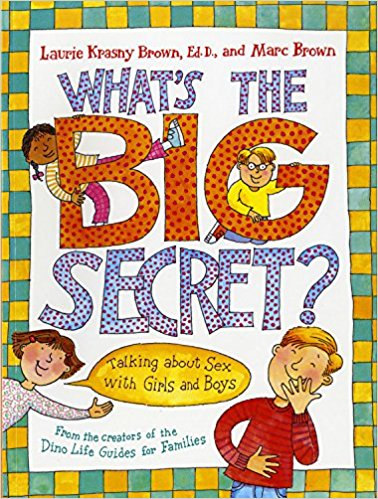
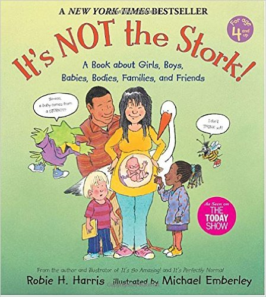
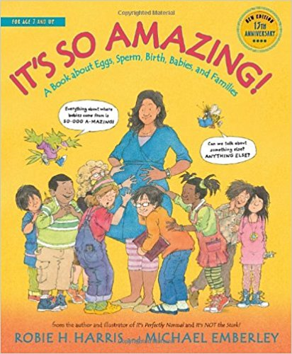
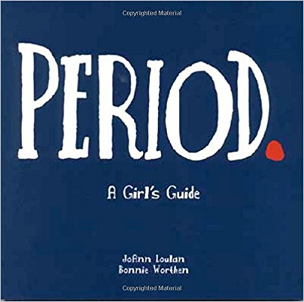
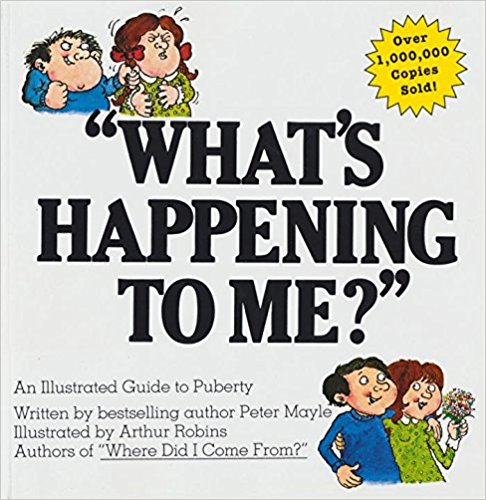
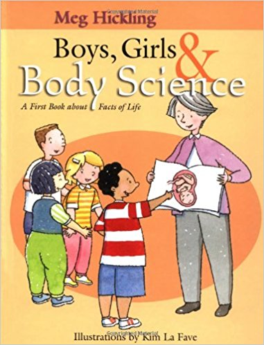
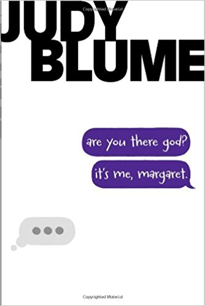
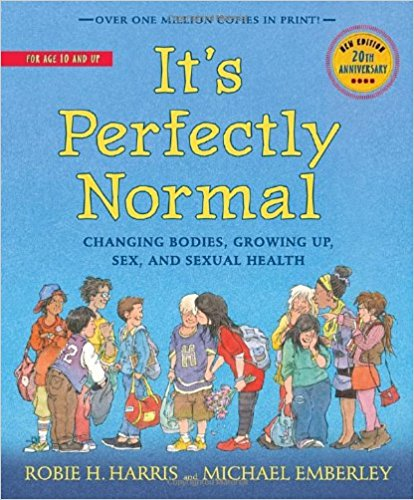
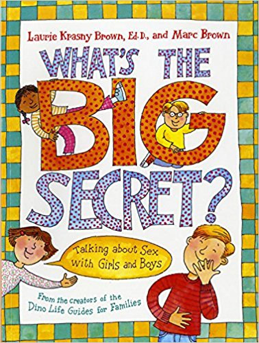
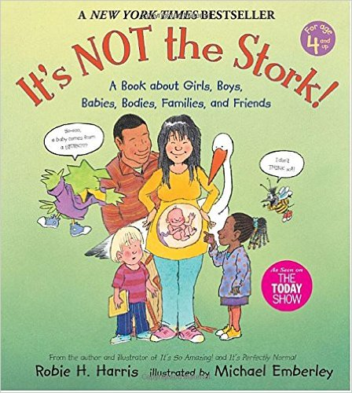
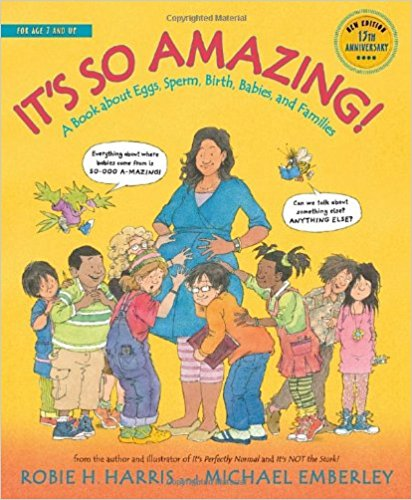
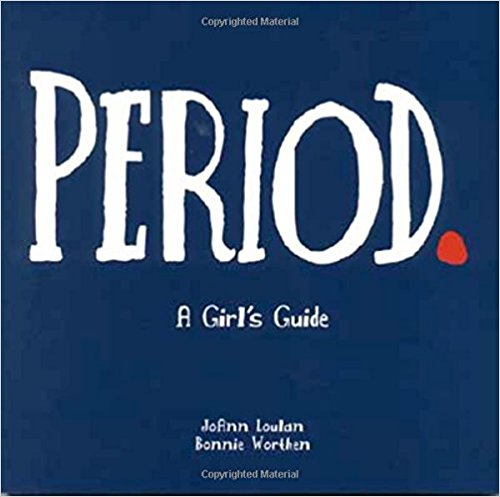
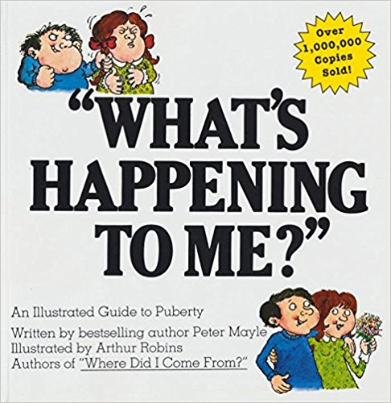
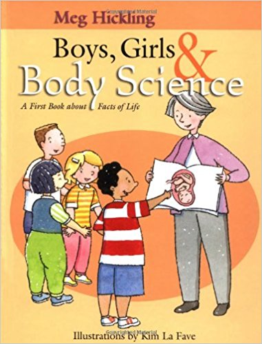
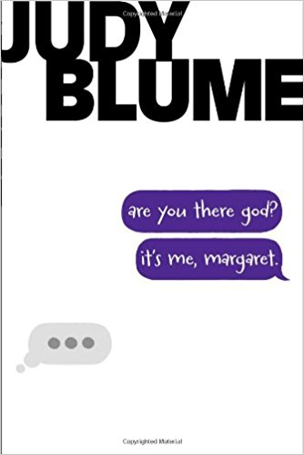
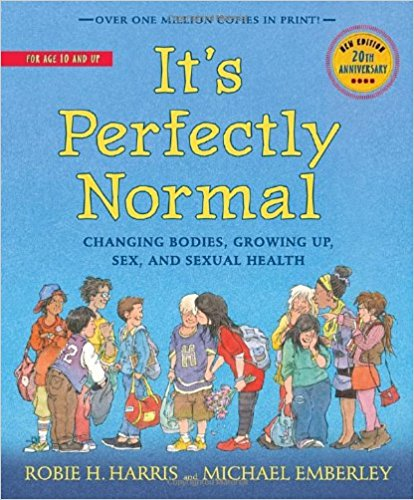
 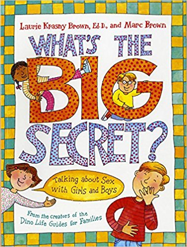
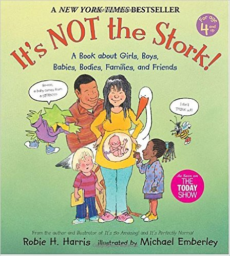
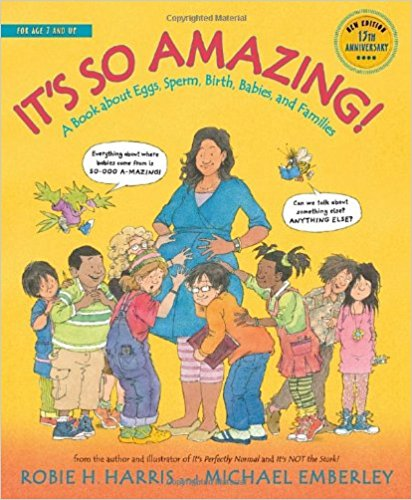
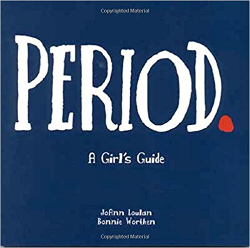
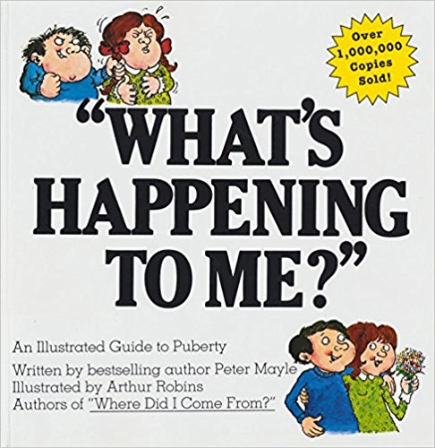
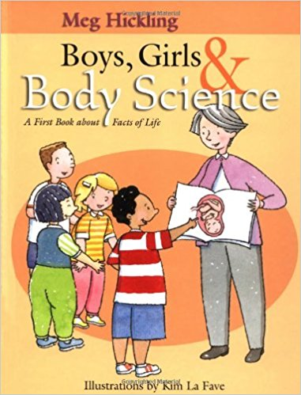
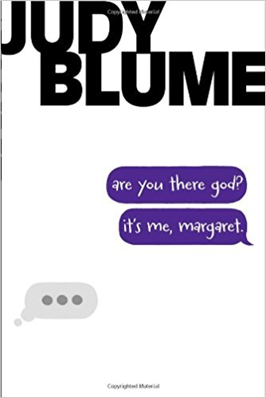
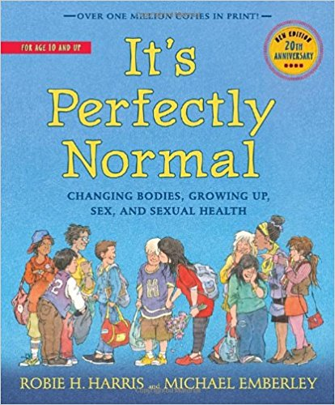
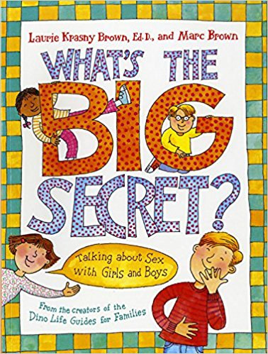
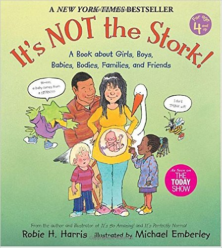
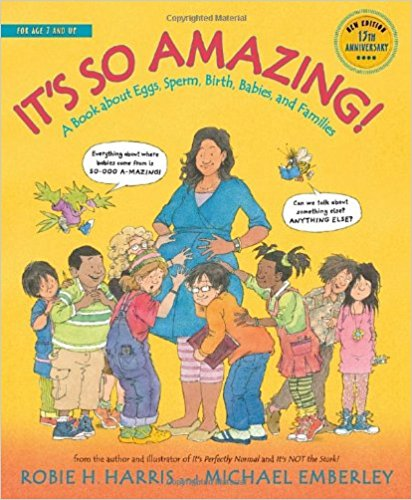
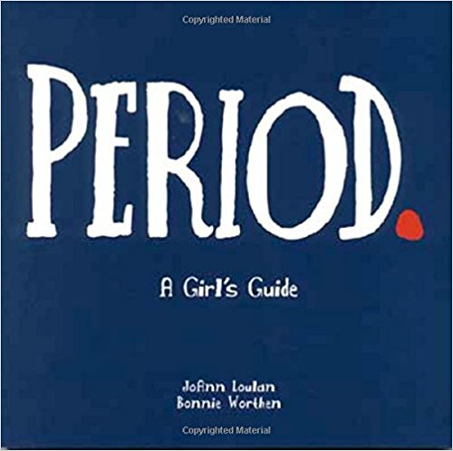
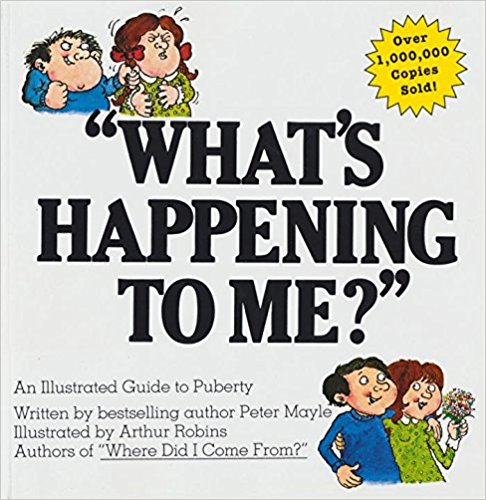
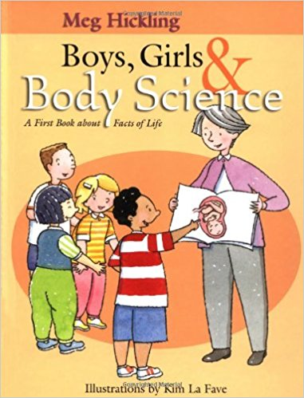
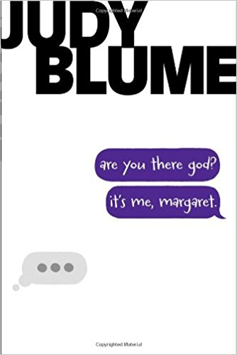
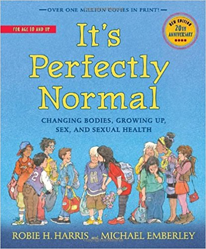
Amazing You!: Getting Smart About Your Private Parts
by Gail Saltz (Author), Lynne Avril Cravath (Illustrator)
Recommended for age 4 to 8
Written with warmth and honesty, Amazing You! presents clear and age-appropriate information about reproduction, birth, and the difference between girls' and boys' bodies. Lynne Cravath's whimsical illustrations enliven the text, making this a book that parents will gladly share with their young ones.
Where Did I Come From? The Facts of Life Without Any Nonsense and with Illustrations
by Peter Mayle (Author), Arthur Robins (Illustrator)
Recommended for age 4 to 8
For more than twenty years "Where Did I Come From?" has helped parents explain the facts of life to their curious children. Millions of children have enjoyed the humor and honesty in this book, while learning how babies are really made.Now this classic has been adapted for African-American parents and children. This text is reader friendly and should appeal to a broad market.
What Makes a Baby
by Cory Silverberg (Author), Fiona Smyth (Illustrator)
Recommended for age 4 to 8
Written with warmth and honesty, Amazing You! presents clear and age-appropriate information about reproduction, birth, and the difference between girls' and boys' bodies. Lynne Cravath's whimsical illustrations enliven the text, making this a book that parents will gladly share with their young ones.
What’s the Big Secret? Talking about Sex with Girls and Boys
by Laurene Krasny Brown (Author), Marc Brown (Illustrator)
Recommended for age 4 to 8
Simple, straightforward, and age-appropriate answers to kids' most common questions about sex, the human body, reproduction, and development. With characteristic sensitivity and humor, the talented team who created Dinosaurs Divorce and When Dinosaurs Die presents helpful basic information, including answers to tough questions for preschoolers, early elementary students, and their teachers and caregivers.
It's Not the Stork!: A Book About Girls, Boys, Babies, Bodies, Families and Friends
by Robie H. Harris, Michael Emberley (Illustrator)
Recommended for age 8 to 10
Two irresistible cartoon characters, a curious bird and a squeamish bee, provide comic relief and give voice to the full range of emotions and reactions children may experience while learning about their amazing bodies. Vetted and approved by science, health, and child development experts, the information is up-to-date, age-appropriate, and scientifically accurate, and always aimed at helping kids feel proud, knowledgeable, and comfortable about their own bodies, about how they were born, and about the family they are part of.
It’s So Amazing!A Book about Eggs, Sperm, Birth, Babies, and Families
by Robie H. Harris, Michael Emberley (Illustrator)
Recommended for age 8 to 10
It's So Amazing! was created in response to repeated requests from parents, teachers, librarians, and health professionals for an up-to-date book about sex and sexuality for children who were still too young for It's Perfectly Normal. Once again, the Bird and Bee are up to their antics, but this time they're younger. In It's So Amazing!, these reassuring characters reflect the many moods of children age 7 and up: silly, serious, curious, embarrassed. Their voices echo the thoughts, questions, and concerns of a younger audience.
Period.: A Girl’s Guide
by JoAnn Loulan, Bonnie Worthen, Chris Wold Dyrud (Intro), Marcia Quackenbush (Illustrator)
Recommended for age 8 to 10
For parents who do not know how or where to begin this discussion, here are ideas to get them started. A detachable Parent's Guide will lead them through the learning process for themselves and their daughters—and even their sons.
What’s Happening to Me? A Guide to Puberty
by Peter Mayle, Arthur Robins, Paul Walter (Illustrator)
Recommended for age 8 to 10
What’s happening to me? was written by Peter Mayle. It was first published in 1975 – over 30 years ago. Despite it’s age and the fact that it hasn’t been updated, it is still one of the top selling books on puberty. It is a really nice book which provides an introduction or guide to puberty and is written in a very casual, honest, sympathetic and humorous style.
Boys, Girls and Body Science: A First Book About Facts of Life
by Meg Hickling, Kim LaFave (Illustrator)
Recommended for age 8 to 10
The story begins with Nicholas, 7, and Jenny, 5, learning about different types of science in their class - from ecology to the digestive system. Then Meg Hickling, a guest speaker, comes to talk to them about a new type of science. Hickling talks about the "science names" for the children's body parts, about good and bad touches and about making babies. She coaches the children not to be embarrassed or shy about body science: "We are going to make this just like a science lesson, we will learn to think like a scientist and we will learn the scientific names for our private parts," she says.
It’s Perfectly Normal: Changing Bodies, Growing Up, Sex, and Sexual Health
by Robie H. Harris, Michael Emberley (Illustrator)
Recommended for age greater than 10
IT'S PERFECTLY NORMAL marks its tenth anniversary with a thoroughly updated edition that includes the latest information on such topics as birth control, hepatitis, HIV, and adoption, among others. This definitive new edition also reflects the recent input of parents, teachers, librarians, clergy, scientists, health professionals, and young readers themselves.
Are You There God? It’s Me, Margaret
by Judy Blume (Author)
Recommended for greater than 10
Margaret Simon, almost twelve, likes long hair, tuna fish, the smell of rain, and things that are pink. She’s just moved from New York City to Farbook, New Jersey, and is anxious to fit in with her new friends—Nancy, Gretchen, and Janie. When they form a secret club to talk about private subjects like boys, bras, and getting their first periods, Margaret is happy to belong. But none of them can believe Margaret doesn’t have religion...
The Care and Keeping of You 1: The Body Book for Younger Girls
by Cara Natterson (Medical Consultant), Valorie Schaefer, Josée Masse (Illustrator)
Recommended for age greater than 10
With all-new illustrations and updated content for girls ages 8 and up, it features tips, how-tos, and facts from the experts. You'll find answers to questions about your changing body, from hair care to healthy eating, bad breath to bras, periods to pimples, and everything in between.